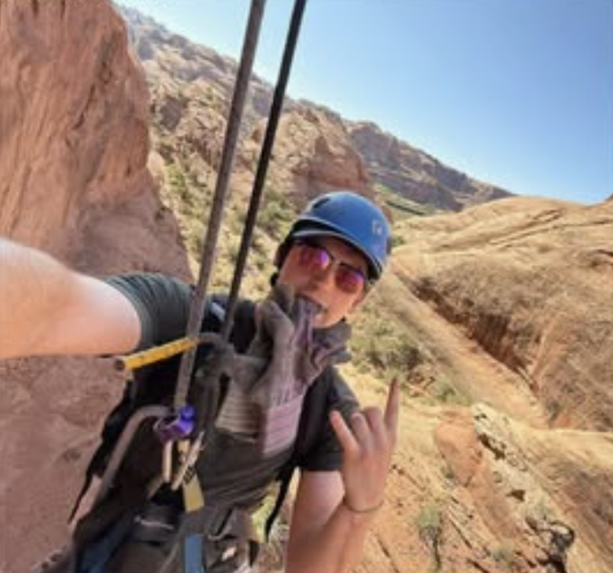

About the MIS & BA Club
Our club welcomes all, including MIS and BA majors, whether you're looking to boost your career, advance your academic journey, or simply want to dive deeper into the world of technology. We regularly host guest speakers who provide valuable insights into the industry. We offer events that assist in resume building and career development to help you succeed in your professional pursuits. Beyond that, we also organize club bonding events, creating a supportive community where lasting connections are forged.
Meet the Executive Board
Click on the profiles to learn more about the board members, their field of study, and why they personally love MIS/BA!

Reid
President
(Click to learn more about Reid!)
Haley
Vice President
(Click to learn more about Haley!)
Jaci
General Coordinator
(Click to learn more about Jaci!)
John
General Coordinator
(Click to learn more about John!)
Frequently Asked Questions
Click on each card to reveal the answer!
Who can join the club?
(Click to flip)
Anyone! While we focus on MIS and Business Analytics, students from all majors at UMD who are interested in the intersection of business and technology are welcome to join.
When do you meet?
(Click to flip)
All of our meeting dates can be found on our Instagram page!
Do I need to have experience in the MIS or BA fields in order to participate?
(Click to flip)
Not at all! While having experience can be helpful, we don't want that to be a barrier for anyone! Feel free to come to our events and learn as much as you want!
Do I need to RSVP for club meetings?
(Click to flip)
There is rarely a requirement to RSVP before an event. You can find all information on our Instagram page.
What does the average MISBA club meeting look like?
(Click to flip)
We have a wide array of events and offerings. A few common topics include, but are certainly not limited to: AI, ethics, competitions, and much more!
Do I have to be a member of the club to participate in events?
(Click to flip)
Nope! While we encourage you to join the club, you can always attend an event if you're curious about the club. We are excited to see you at a future event!